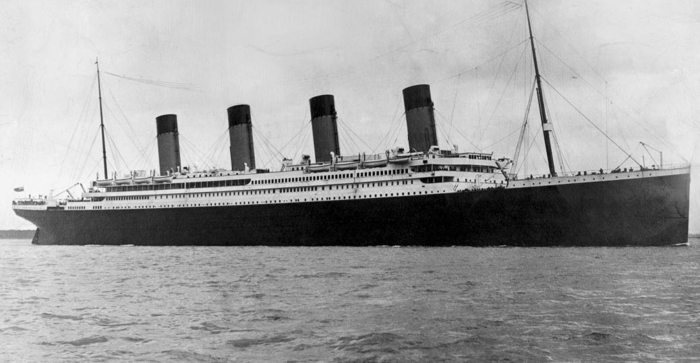

Titanic Disaster - Survival prediction
Kaggle
Feb 24, 2021

In this challenge, we were asked to build a predictive model that answers the question: “what sorts of people were more likely to survive?” using passenger data (ie name, age, gender, socio-economic class, etc...... read more